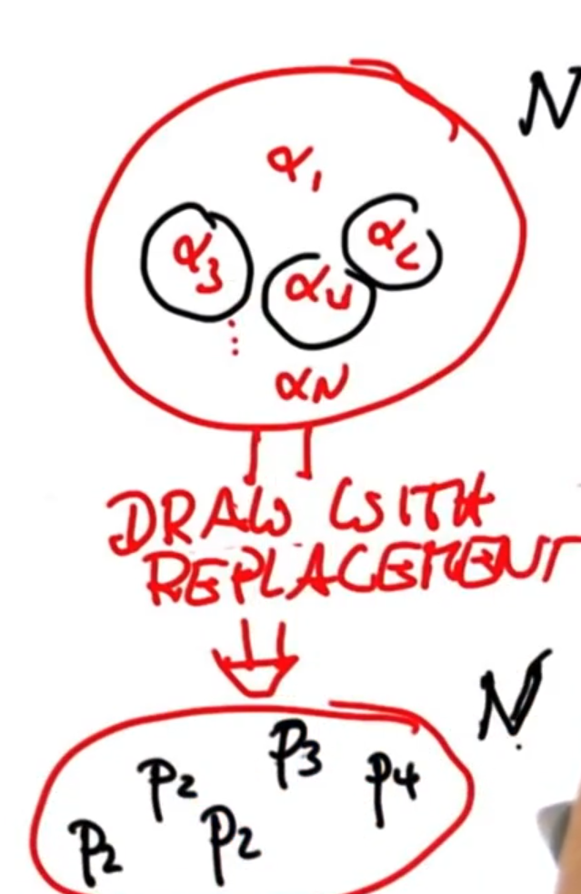

| State Space | Belief | Efficiency | Accuracy |
|---|---|---|---|
| Continuous | Multimodal | Approximate |
So, in a first instance, given a floor plan the robot has to perform global localization. That is, it does not know where it is, and it has to find out based on sensor measurements:

The robot has range sensors (blue lines), which use sonar sensors (basically sound) to obtain the distance between the robot and the obstacles around it. It uses this sensors to determine a posterior distribution that models its position at a given time.
Each particle (dot) is a discrete guess whether the robot might be, and it holds the following information: x coordinate, y coordinate, and heading direction. Then, the comprise of multiple of these guesses make up the representation for the posterior of the robot's location.
So, initially the robot is completely uncertain as to where it is, which derives into a uniform distribution as to where it may be, and thus the particles are scattered all over the floor plan. However as time passes, the particle filter makes them survive according to how consistent these particles are compared to the sensor measurements:


In summary, the particles guess where the robot might be moving and then the filter makes them "survive" (it does not discard them) using survival of the fittest. This latter statement means that those particles that are more consistent with the measurements are more likely to survive.
Each particle has assigned an importance weight \(w\) that determines how likely a measurement is.
Given a total of \(N\) particles:
\begin{align} N \begin{cases} (\cdots, \cdots, \cdots)=p_1 \\ (\cdots, \cdots, \cdots)=p_2 \\ \vdots\\ (\cdots, \cdots, \cdots)=p_N \\ \end{cases} \end{align}Where each particle has an importance weight assigned:
\begin{align} N \begin{cases} p_1 & \rightarrow w_1\\ p_2 & \rightarrow w_2\\ \vdots\\ p_N & \rightarrow w_N\\ \end{cases} \end{align}Let \(W = \sum_i w_i\) be the sum of all the weights. We introduce a new variable \(\alpha\) which represents the normalized weights:
\begin{align} N \begin{cases} p_1 & \rightarrow w_1 & \rightarrow \alpha_1 = \frac{w_1}{W}\\ p_2 & \rightarrow w_2 & \rightarrow \alpha_2 = \frac{w_2}{W}\\ \vdots\\ p_N & \rightarrow w_N & \rightarrow \alpha_N = \frac{w_N}{W}\\ \end{cases} \end{align}Hence, \(\sum_i \alpha_i = 1.0\). What resampling does is, it puts every \(\alpha_i\) into a set:
And then it draws with replacement a given number of elements from the set. And we pick each particle with probability \(\alpha_i\). In our case, we draw \(N\) elements from the set. Also, because we allow replacement, we can draw multiple copies of the same particle \(\p_i\):

As you can see in the previous image, we have drawn three times \(p_2\), probably because the associated \(\alpha_2\) was larger than the rest of the \(\alpha\).
Suppose we have the following data:
\begin{align} N \begin{cases} p_1 & \rightarrow w_1 = 0.6 & \rightarrow \alpha_1 = \frac{w_1}{W} = \frac{0.6}{6.0} = 0.1\\ p_2 & \rightarrow w_2 = 1.2 & \rightarrow \alpha_2 = \frac{w_2}{W} = \frac{1.2}{6.0} = 0.2\\ p_3 & \rightarrow w_3 = 2.4 & \rightarrow \alpha_3 = \frac{w_3}{W} = \frac{2.4}{6.0} = 0.4\\ p_4 & \rightarrow w_4 = 0.6 & \rightarrow \alpha_4 = \frac{w_4}{W} = \frac{0.6}{6.0} = 0.1\\ p_5 & \rightarrow w_2 = 1.2 & \rightarrow \alpha_5 = \frac{w_5}{W} = \frac{1.2}{6.0} = 0.2\\ \end{cases} \end{align}Then, the probability of never sampling \(p_3\) is given by the multiplication rule of probability:
On the first draw:
\begin{align} P(\bar{p_3}) = P(p_1) + P(p_2) + P(p_4) + P(p_5) = 0.6 \end{align}Because we allow for resampling, on the second draw:
\begin{align} 0.6 \cdot P(\bar{p_3}) = 0.6 \cdot (P(p_1) + P(p_2) + P(p_4) + P(p_5)) = 0.6^2 \end{align}Thus, on the fifth and final draw:
\begin{align} 0.6^4 \cdot P(\bar{p_3}) = 0.6^4 \cdot (P(p_1) + P(p_2) + P(p_4) + P(p_5)) = 0.6^5 = 0.0777 \end{align}However, the probabily of never drawing \(p_1\) equals:
\begin{align} P(\bar{p_1}) = 0.9 ^ 5 = 0.59 \end{align}Therefore, the particles with a low importance weight will survive with a much lower rate than the ones with a higher importance weight.